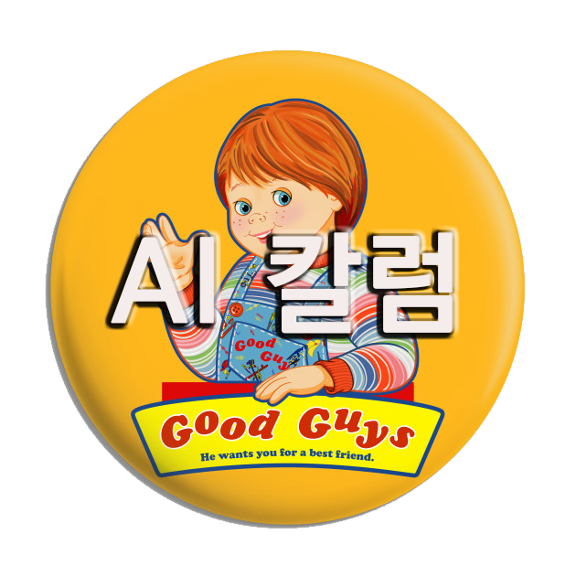
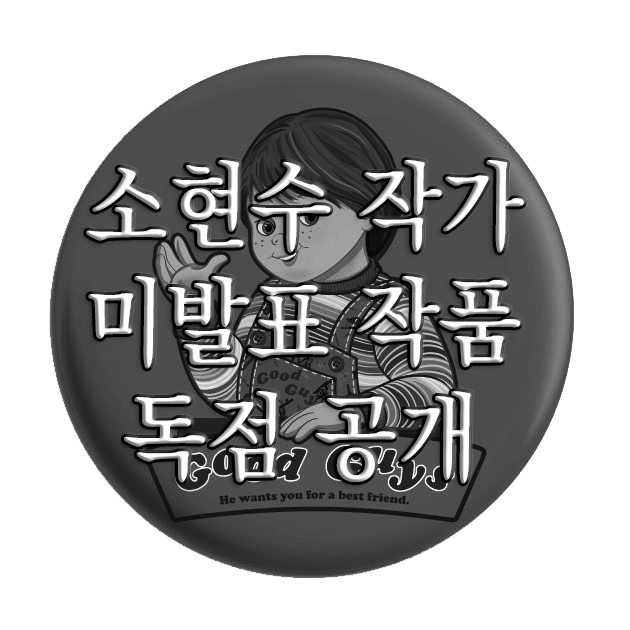
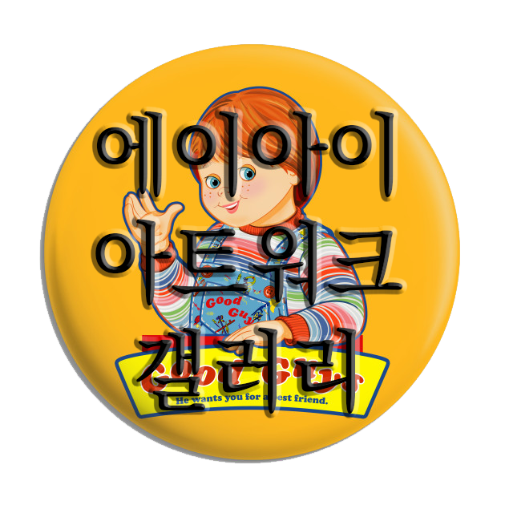

AI가 예술의 종말을 가져올 거라는 주장은 허구입니다.
우리가 지금까지 소비하던 예술의 거의 모든 분야를 AI가 생성할 수 있게 될 미래를 두고 혹자는 예술의 종말이 도래하리라고 부르짖습니다.
우리는 그에 동의하지 않습니다.
AI를 도구로 누구나 영감을 손쉽게 미술, 소설, 영화, 만화, 드라마 등으로 구현할 수 있게 된다는 것, 창작할 수 있게 된다는 것, 그로써 생기는 당장의 가시적인 현상 혹은 문제는 예술을 도구로 발생시키는 가치의 상실, 즉 사회경제적 가치 창출이 어렵거나 불가능해지는 것뿐입니다. 그뿐입니다.
묻습니다.
예술을 도구로 삼아 금전적 가치를 창출하지 못하게 되는 것이 예술의 종말입니까?
예술을 도구로 삼아 사회적 지위나 명성을 얻지 못하게 되는 것이 예술의 종말입니까?
오스카 와일드는 말했습니다. "예술은 세상에서 알려진 가장 강렬한 개인주의의 형태이다."
프리드리히 니체는 말했습니다. "취향. 그것은 저울추이고 저울판인 동시에 저울질하는 자다."
우리는 오스카 와일드와 프리드리히 니체의 통찰을 믿습니다. 예술은 비교 우위를 기반으로 선점하는 지위나 가치의 창출을 위해 존재하는 것이 아닌 개인과 개인의 취향을 반영하기 위한 무언가입니다.
똑바로 선 개인이 취향껏 소유하고 즐기는 무언가입니다. 예술은 특정한 소수만이 만들어낼 수 있는 난해하고 어려운 것이 아니며 우리, 개인의 내면에 자리한 무언가입니다.
우리의 예술은 기술의 발전, AI로 한층 더 높은 차원에서 꽃을 피우게 될 것입니다. 우리의 예술은 특정한 개인의 내면과 취향을 확인하고 꽃피우는 수단 그 자체가 될 것입니다.
우리의 예술은 특정인 혹은 특정 집단의 권위나 다수 대중의 취향과 관계없이 오롯이 개인 안에서 향유될 것입니다.
우리는 AI를 이용해 글을 쓸 것이고 그림을 그릴 것이며 음악을 작곡하고, 영화, 드라마, 게임을 창작할 것입니다.
우리의 예술을 사랑하고 만끽해줄 개인, 개인들이 함께 즐길 것이고, 그들의 그것 또한 우리가 즐기는 예술이 될 것입니다.
우리의 예술은 종말이 아닌 진정한 의미의 종착을 맞이할 것입니다.
기술의 발전, AI의 등장. 그로써 이루어지는 모든 혹은 더 많은, 다수 인간 영감의 구체적이며 고차원적 발현은 예술의 종말이 아닌 예술이 궁극적으로 지향하고 도달했어야 할 바람직한 목적지가 될 것입니다.
우리는 기술 낙관주의자입니다.
The claim that AI will bring about the end of art is a myth.
The prospect of AI being able to generate nearly all of the art we consume today has some calling for the end of art.
We disagree.
The only immediate, tangible phenomenon or problem that will arise from the fact that AI will make it easier for anyone to turn inspiration into art, novels, movies, comics, drama, etc., is that it will make it harder or impossible to create socio-economic value. That's all.
Question.
Is the inability to create monetary value with art as a tool the end of art?
Is it the end of art when you can't use it as a tool to gain social status or fame?
Oscar Wilde said, "Art is the most intense form of individualism known to man."
Friedrich Nietzsche said, "Taste. It is both the scale and the weigher."
We believe in the insights of Oscar Wilde and Friedrich Nietzsche: art is not something that exists to create status or value based on comparative advantage; it is something that reflects the individual and his or her taste. It is something that upright individuals own and enjoy to their taste. Art is not something esoteric and difficult that only a select few can create; it is something that resides within us, the individual.
Our art will blossom to a higher level with the advancement of technology and AI.
Our art will become a means of affirming and blossoming the inner world and tastes of a particular individual.
Our art will be enjoyed solely within the individual, without regard to the authority of a particular person or group, or the tastes of the masses.
We will use AI to write, paint, compose music, and create movies, shows, and games.
Our art will be enjoyed by individuals, individuals who will love and savor it, and theirs will be the art we enjoy.
Our art will truly come to an end, not an apocalypse.
Technology advances, AI emerges. All or many, many more, specific and higher order manifestations of human inspiration will not be the end of art, but the desirable destination that art should have been aiming for and reaching.
We are techno-optimists.


